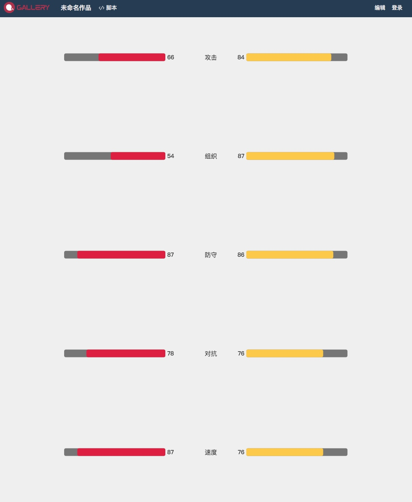

在小程序中使用Echart图表
- Echart UI构建（柱状图）
- Echart 假数据
- Echart 动态设置数据
1、柱状图UI示例
1 | // Echart config，包括init data 和style及数据类型 |
以上就是利用echart图表插件在小程序中生成一个我们需要的柱状图用以展示我们需要表达给用户的数据表。
当然，在实际的开发中，所有的数据都是通过获取数据库中的数据，然后根据数据生成，而不是写死在series[]中，那么如何将ajax或者其他方式获取到的数据传入我们的UI中呢？
Echart的文档告诉我们：
###数据的动态更新
ECharts 由数据驱动，数据的改变驱动图表展现的改变，因此动态数据的实现也变得异常简单。
所有数据的更新都通过 setOption实现，你只需要定时获取数据，setOption 填入数据，而不用考虑数据到底产生了那些变化，ECharts 会找到两组数据之间的差异然后通过合适的动画去表现数据的变化。
也就是上面示例代码中的这个方法
chart.setOption(option)
ok直接看代码：
1 | var hostTeamInfo = []//获取的数据 |
根据小程序的指导文档，这部分代码需要在page()生命周期中完成，至于是在onLoad还是onReady中，需要各位根据实际情况来决定
效果图：
